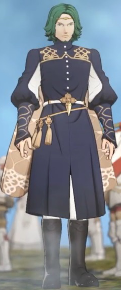

About Seteth
Seteth is a 3000 year old desk job dragon.
Seteth and his illuminati family
Seteth's Style
- He's got green hair
- He's got green eyes
- He's got style
Seteth's Friends
Seteth has some wacky friends wooaahh! He has a daughter no sister no daughter no Click on the links below!